Meridius: loop 1, placeholder art
History. This was the state before the Blender environment art; see the current tab for the latest build.
Status, 20 October 2026: the full loop is playable end to end in the browser (base, recruitment, roster, upgrades, expedition preparation with army limits, a randomised campaign, isometric battles, return home). Art is procedural placeholder work; generated sprites are planned and waiting for fal credits. Nothing on this card has been accepted by the user yet.
Run it
cd projects/meridius/source/game
npm install
npm run dev # http://localhost:5199
npm test # rules, map generation and full-loop tests
npm run sim # headless battle balanceWhat is in the slice
- Amberfeld Garrison: six upgradable buildings (Command Tent, Barracks, Training Yard, Armoury, Infirmary, Quartermaster), recruitment with a refreshing pool, drill, promotions, gear tiers, armour repair, injury treatment, leave, a council stipend and a memorial for the fallen.
- Expedition preparation: campaign intelligence (enemies, terrain, length, threat), six unit slots and a command-point budget where veterans cost more, supplies within silver and wagon capacity, quartermaster's advice and warnings.
- The Hillsvain Raids: a randomised branching map with battles, ambushes, lookouts, abandoned villages, eighteen events with choices, camps (rest, watch, repair), fog of war, rations per march, fatigue, morale and wounds that carry over, retreat at any time, and an orc warlord's war camp as the objective.
- Battles: isometric grid with facing, flank and rear attacks, high ground, cover, thickets, line of sight, zones of control, spearwall, shield wall, overwatch, first strike, morale states, rout and rally, permadeath with a survival roll, night raids lit by torches, three map templates and an ambush layout. Enemy AI weighs damage, kill chance, flanks, danger and spear walls by temperament.
- Feel: animated moves, lunges, bolts in flight, hit sparks, misses and blocks, falls, routs, floating combat text, camera follow, synthesised sound, a field manual and a welcome briefing.
Review captures (loop one)
Captured from the running game with fixed seeds (Playwright, 1920 × 1080, Edge). Placeholder art.
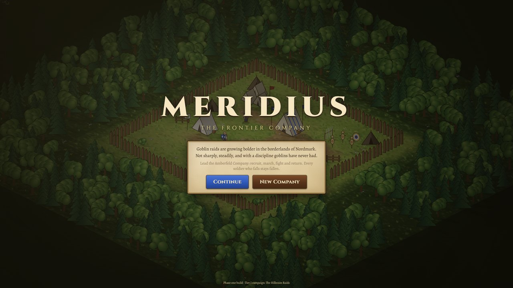
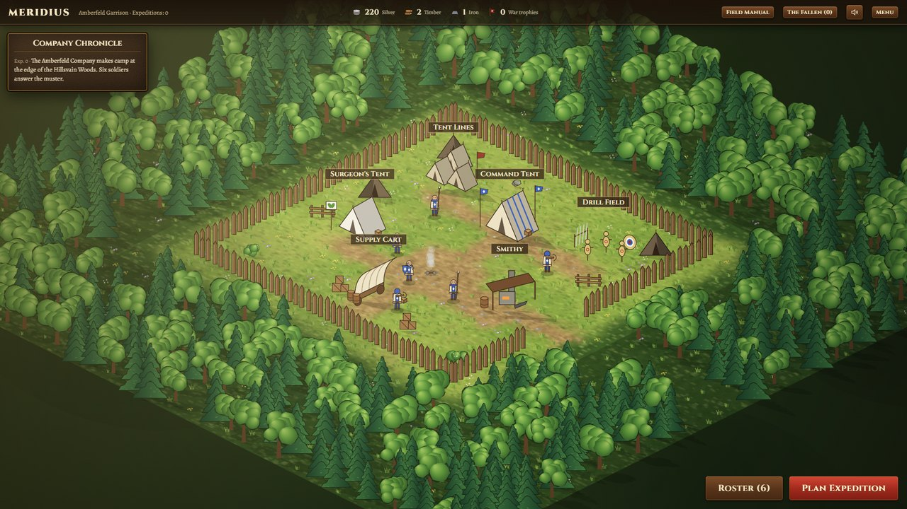
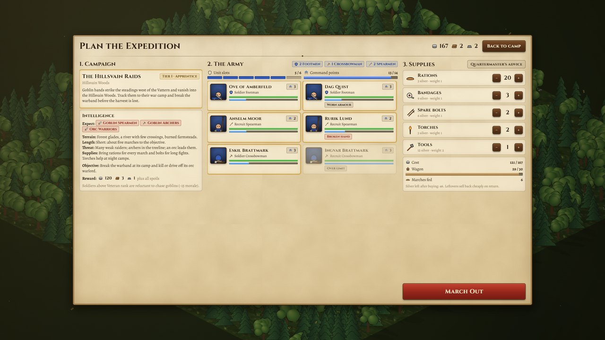
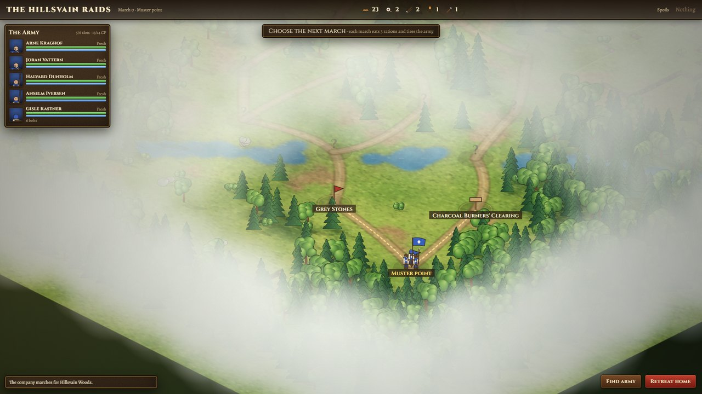
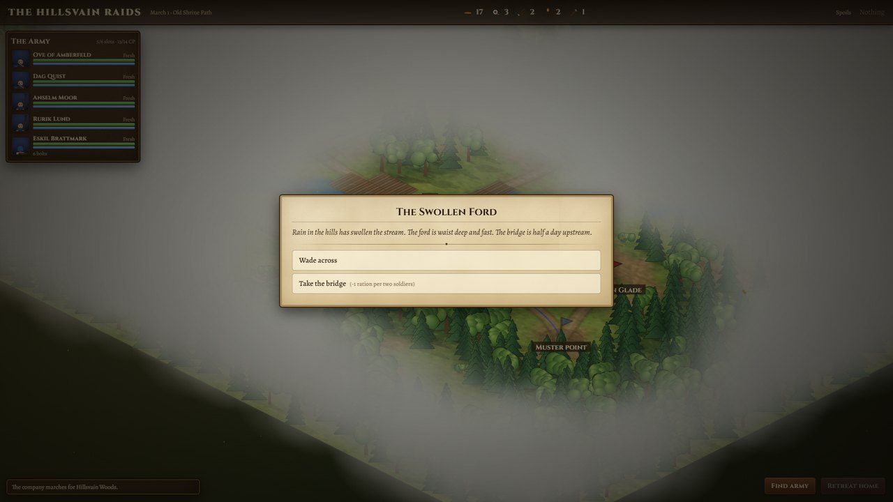
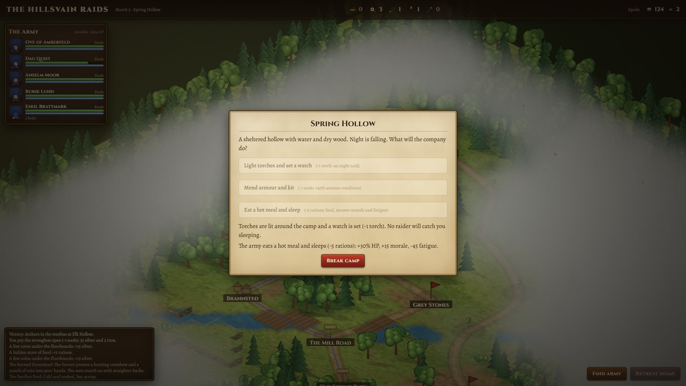
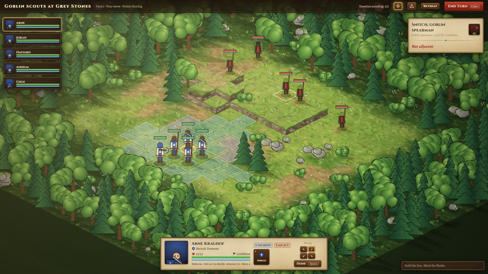
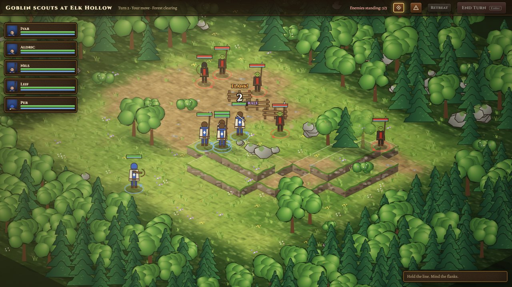
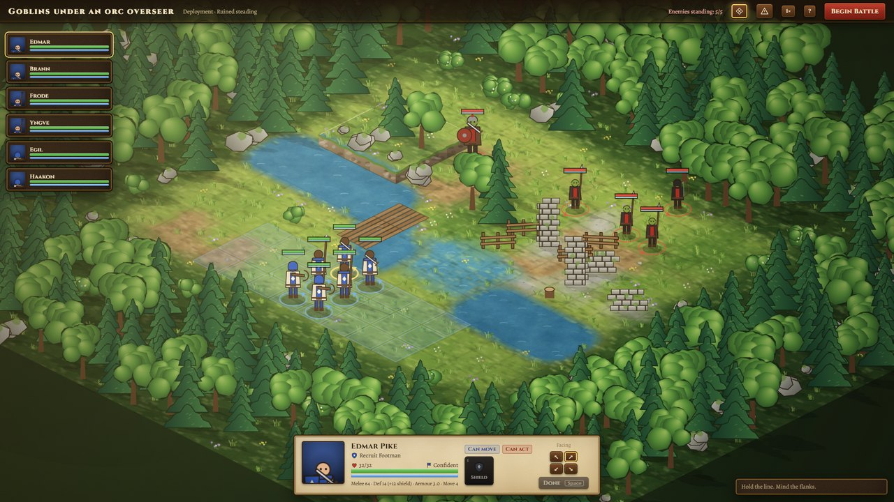
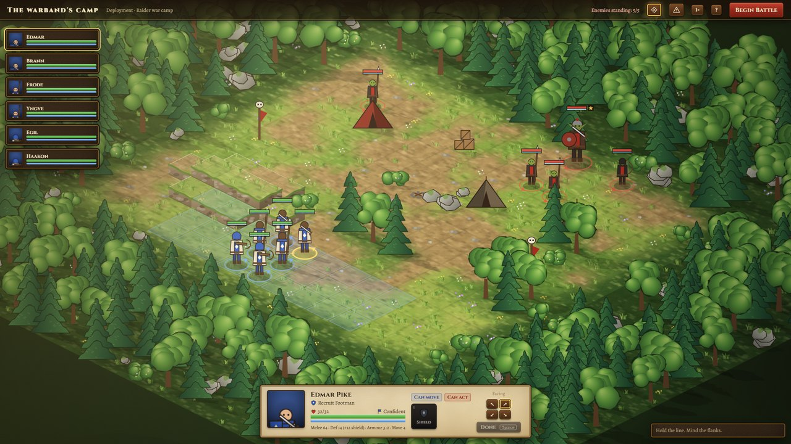
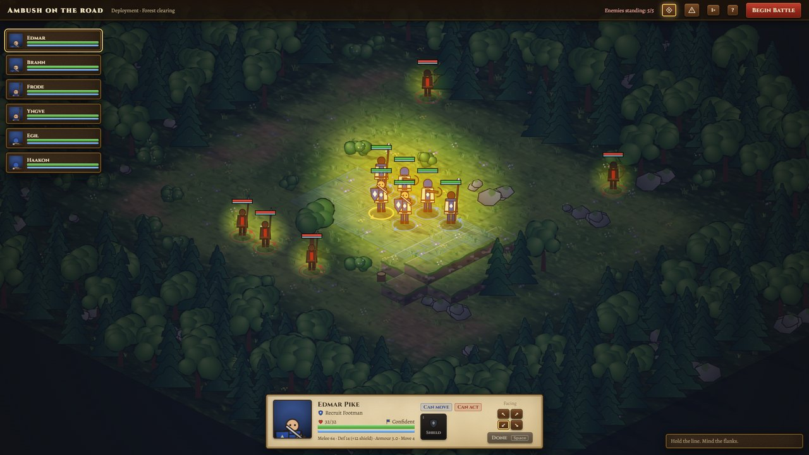
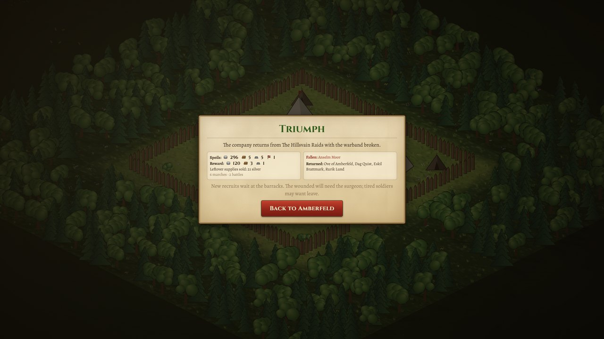
Balance runs
Headless simulation with an automated, deliberately average player (60 companies, six expeditions each).
| Expedition | Success | Deaths | Silver after | Roster | Average rank |
|---|---|---|---|---|---|
| 1 | 60% | 1.25 | 217 | 6.8 | 1.48 |
| 2 | 70% | 1.12 | 238 | 6.6 | 1.96 |
| 3 | 69% | 0.90 | 240 | 6.8 | 2.37 |
| 4 | 76% | 0.59 | 313 | 7.2 | 2.64 |
| 6 | 67% | 0.72 | 377 | 7.2 | 2.98 |
Earlier loops found and fixed: an unwinnable objective (7% success), a starvation spiral, veterans being worth less than their command cost, and an economy that ground the roster down.
Next
- Generate the sprite, prop, building, landmark and portrait art (plan in
projects/meridius/source/game/art/ART_PLAN.md, about $5–8 of the $30 budget) once fal credits are added. - Review the art in the game camera against the reference sheets; loop on weak sheets.
- Hands-on play-testing of the full loop, then a generated sound bank and music if the budget allows.
Plan: projects/meridius/docs/plan-phase-1.md.